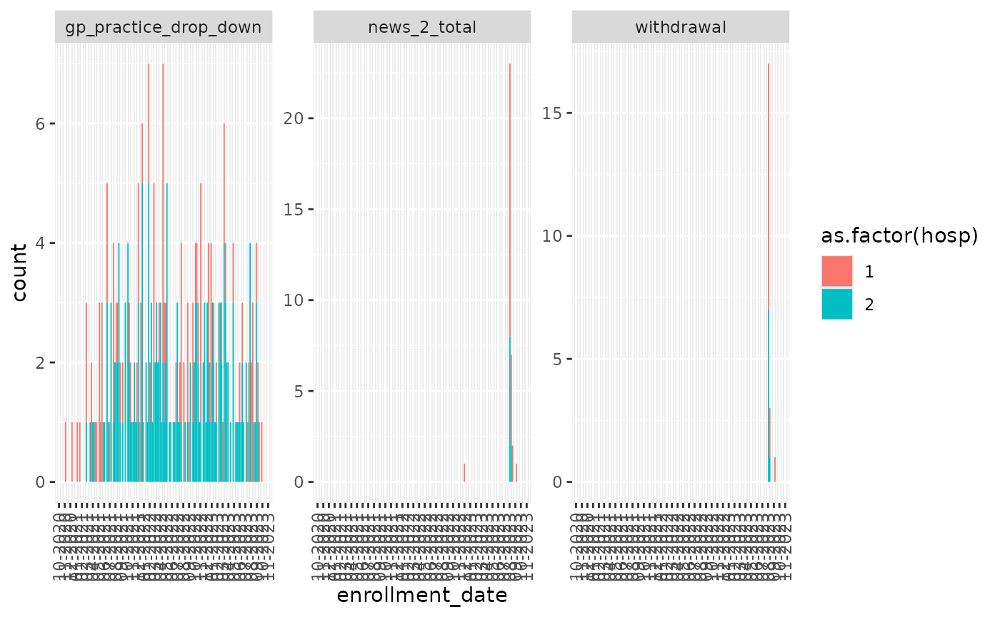

Getting started
avoncap.Rmd
# The data input directory on my development machine:
options("avoncap.input" = "~/Data/avoncap/")
# library(avoncap)
devtools::load_all()
#> ℹ Loading avoncapInput data location
- first level directories.
- Filenames need some indication of database year (either as 20-21,21-22,… or as y1,y2,…)
# The data input directory on my development machine:
options("avoncap.input" = "~/Data/avoncap/")
# The directory structure:
fs::dir_tree(path = avoncap::input(),glob="*/cache/*",invert=TRUE)
#> /home/vp22681/Data/avoncap
#> ├── avoncap-data-quality
#> │ ├── 2023-08-07
#> │ │ └── confirmed-missing-2023-08-07.csv
#> │ └── README.md
#> ├── avoncap-export
#> │ ├── 2022-03-22
#> │ │ ├── central_y1.csv
#> │ │ └── central_y2.csv
#> │ ├── 2022-06-20
#> │ │ ├── central_y1.csv
#> │ │ └── central_y2.csv
#> │ ├── 2022-07-11
#> │ │ ├── central_y1.csv
#> │ │ └── central_y2.csv
#> │ ├── 2022-09-21
#> │ │ ├── central_y1.csv
#> │ │ └── central_y2.csv
#> │ ├── 2022-10-07
#> │ │ └── uad-controls.csv
#> │ ├── 2022-11-09
#> │ │ ├── central_y1.csv
#> │ │ ├── central_y2.csv
#> │ │ └── uad-controls.csv
#> │ ├── 2023-03-02
#> │ │ ├── central_y1.csv
#> │ │ ├── central_y2.csv
#> │ │ └── central_y3.csv
#> │ ├── 2023-05-02
#> │ │ ├── central_y1.csv
#> │ │ ├── central_y2.csv
#> │ │ └── central_y3.csv
#> │ ├── 2023-06-12
#> │ │ ├── central_y1.csv
#> │ │ ├── central_y2.csv
#> │ │ └── central_y3.csv
#> │ ├── 2023-06-16
#> │ │ └── uad-controls.csv
#> │ ├── 2023-06-28
#> │ │ ├── central_y1.csv
#> │ │ ├── central_y2.csv
#> │ │ ├── central_y3.csv
#> │ │ └── gp.csv
#> │ ├── 2023-07-24
#> │ │ ├── central_y1.csv
#> │ │ ├── central_y2.csv
#> │ │ └── central_y3.csv
#> │ ├── 2023-09-13
#> │ │ ├── central_y1.csv
#> │ │ ├── central_y2.csv
#> │ │ └── central_y3.csv
#> │ ├── 2023-11-20
#> │ │ └── ed_y3.csv
#> │ ├── 2023-11-21
#> │ │ ├── central_y1.csv
#> │ │ ├── central_y2.csv
#> │ │ └── central_y3.csv
#> │ ├── 2023-11-24
#> │ │ ├── central_y1.csv
#> │ │ ├── central_y2.csv
#> │ │ ├── central_y3.csv
#> │ │ └── ed_y3.csv
#> │ ├── 2024-04-08
#> │ │ ├── central_y1.csv
#> │ │ ├── central_y2.csv
#> │ │ ├── central_y3.csv
#> │ │ ├── central_y4.csv
#> │ │ └── ed_y3.csv
#> │ ├── 2024-10-03
#> │ │ ├── central_y1.csv
#> │ │ ├── central_y2.csv
#> │ │ ├── central_y3.csv
#> │ │ ├── central_y4.csv
#> │ │ └── ed_y3.csv
#> │ ├── 22-23 codebook NBT.pdf
#> │ ├── 22-23 codebook UHBW.pdf
#> │ ├── Avon CAP - LRTD Patients 21-22 _ REDCap codebook.pdf
#> │ ├── Avon CAP - LRTD central database 20-21 _ REDCap.pdf
#> │ ├── AvonCAP Pneumococcus Codebook.pdf
#> │ ├── AvonCAP field validity.xlsx
#> │ └── README.md
#> ├── avoncap.yaml
#> ├── cache
#> ├── downloads
#> │ └── README.md
#> ├── ethnicity
#> │ ├── 2022-07-12
#> │ │ ├── y1.csv
#> │ │ └── y2.csv
#> │ ├── 2022-10-27
#> │ │ ├── y1.csv
#> │ │ └── y2.csv
#> │ ├── 2023-06-07
#> │ │ ├── y1.csv
#> │ │ ├── y2.csv
#> │ │ └── y3.csv
#> │ ├── 2023-11-22
#> │ │ ├── BRI_y2_extra.csv
#> │ │ ├── BRI_y3_extra.csv
#> │ │ ├── NBT_y2_extra.csv
#> │ │ ├── NBT_y3_extra.csv
#> │ │ ├── y1.csv
#> │ │ ├── y2.csv
#> │ │ └── y3.csv
#> │ └── README.md
#> ├── google-mobility
#> │ └── Global_Mobility_Report.csv
#> ├── ltla-incidence
#> │ ├── ltla_2022-02-28.csv
#> │ └── ltla_2022-03-18.csv
#> ├── maybe_some_useful_files_data.zip
#> ├── metadata
#> │ ├── 2022-10-24
#> │ │ ├── central_y1.csv
#> │ │ ├── central_y2.csv
#> │ │ ├── central_y3.csv
#> │ │ └── uad-controls.csv
#> │ ├── 2022-11-29
#> │ │ └── pneumococcal.csv
#> │ └── README.md
#> ├── metadata-review
#> │ ├── 2022-10-25
#> │ │ └── metadata-review.csv
#> │ ├── AvonCAP 21-22 markred.xlsx
#> │ └── AvonCAP data dictionary - fields.csv
#> ├── nhs-extract
#> │ ├── 2022-07-11
#> │ │ ├── deltave_BRI_y1.csv
#> │ │ ├── deltave_BRI_y2.csv
#> │ │ ├── deltave_NBT_y1.csv
#> │ │ └── deltave_NBT_y2.csv
#> │ ├── 2022-09-20
#> │ │ ├── deltave_BRI_y1.csv
#> │ │ ├── deltave_BRI_y2.csv
#> │ │ ├── deltave_BRI_y3.csv
#> │ │ ├── deltave_NBT_y1.csv
#> │ │ ├── deltave_NBT_y2.csv
#> │ │ └── deltave_NBT_y3.csv
#> │ ├── 2022-11-16
#> │ │ ├── deltave_BRI_y1.csv
#> │ │ ├── deltave_BRI_y2.csv
#> │ │ ├── deltave_BRI_y3.csv
#> │ │ ├── deltave_NBT_y1.csv
#> │ │ ├── deltave_NBT_y2.csv
#> │ │ └── deltave_NBT_y3.csv
#> │ ├── 2022-11-29
#> │ │ └── pneumococcal.csv
#> │ ├── 2022-11-30
#> │ │ ├── deltave_BRI_y1.csv
#> │ │ ├── deltave_BRI_y2.csv
#> │ │ ├── deltave_BRI_y3.csv
#> │ │ ├── deltave_NBT_y1.csv
#> │ │ ├── deltave_NBT_y2.csv
#> │ │ └── deltave_NBT_y3.csv
#> │ ├── 2022-12-07
#> │ │ ├── deltave_BRI_y1.csv
#> │ │ ├── deltave_BRI_y2.csv
#> │ │ ├── deltave_BRI_y3.csv
#> │ │ ├── deltave_NBT_y1.csv
#> │ │ ├── deltave_NBT_y2.csv
#> │ │ └── deltave_NBT_y3.csv
#> │ ├── 2022-12-20
#> │ │ └── ipd_avoncap_linkage.csv
#> │ ├── 2023-02-07
#> │ │ └── pneumococcal.csv
#> │ ├── README.md
#> │ └── old
#> │ ├── AdmissionDateByStudyNumber_2022-07-12.csv
#> │ └── DeltaVE_04042022.csv
#> ├── spim-seroprevalence
#> │ └── week15_2022_seroprev_modellers.csv
#> └── urine-antigens
#> ├── 2022-09-15
#> │ └── uad-cases.csv
#> ├── 2023-05-15
#> │ ├── gp-cases.csv
#> │ └── uad-cases.csv
#> ├── B1851202_SAP V1.0-27Sep2021_Final.pdf
#> ├── README.md
#> └── Table Template Serotype Distribution Scientific Affairs Proposal_FINAL.docx
# get the most recent files
avoncap::most_recent_files("ethnicity")
#> # A tibble: 7 × 7
#> filename directory path date hospital study_year filetype
#> <chr> <chr> <fs::path> <date> <chr> <int> <chr>
#> 1 BRI_y2_extra ethnicity …I_y2_extra.csv 2023-11-22 BRI 2 csv
#> 2 BRI_y3_extra ethnicity …I_y3_extra.csv 2023-11-22 BRI 3 csv
#> 3 NBT_y2_extra ethnicity …T_y2_extra.csv 2023-11-22 NBT 2 csv
#> 4 NBT_y3_extra ethnicity …T_y3_extra.csv 2023-11-22 NBT 3 csv
#> 5 y1 ethnicity …3-11-22/y1.csv 2023-11-22 NA NA csv
#> 6 y2 ethnicity …3-11-22/y2.csv 2023-11-22 NA NA csv
#> 7 y3 ethnicity …3-11-22/y3.csv 2023-11-22 NA NA csvLoad data sources and recording provenance
ethn = avoncap::load_data("ethnicity")
#> using cached item: ~/.cache/avoncap/data-6c0a3f301ee14020e3907a7472c55225-767899bd2d292ad780aeb94b72046017.rda
avoncap::most_recent_files("nhs-extract","deltave")
#> # A tibble: 6 × 7
#> filename directory path date hospital study_year filetype
#> <chr> <chr> <fs::path> <date> <chr> <int> <chr>
#> 1 deltave_BRI_y1 nhs-extract …BRI_y1.csv 2022-12-07 BRI 1 csv
#> 2 deltave_BRI_y2 nhs-extract …BRI_y2.csv 2022-12-07 BRI 2 csv
#> 3 deltave_BRI_y3 nhs-extract …BRI_y3.csv 2022-12-07 BRI 3 csv
#> 4 deltave_NBT_y1 nhs-extract …NBT_y1.csv 2022-12-07 NBT 1 csv
#> 5 deltave_NBT_y2 nhs-extract …NBT_y2.csv 2022-12-07 NBT 2 csv
#> 6 deltave_NBT_y3 nhs-extract …NBT_y3.csv 2022-12-07 NBT 3 csv
rawData = avoncap::load_data("nhs-extract","deltave")
#> using cached item: ~/.cache/avoncap/data-6c0a3f301ee14020e3907a7472c55225-efc310106a2b36fab3e67f93fe2c9461.rda
# rawData = avoncap::load_data("nhs-extract","deltave",merge = FALSE)
avoncap::save_data_source_info(ethn, rawData, .file = tempfile("file-info",fileext = ".txt"))
#> # A tibble: 13 × 2
#> path md5
#> <chr> <chr>
#> 1 /home/vp22681/Data/avoncap/ethnicity/2023-11-22/BRI_y2_extra.csv 030679d…
#> 2 /home/vp22681/Data/avoncap/ethnicity/2023-11-22/BRI_y3_extra.csv e66fe88…
#> 3 /home/vp22681/Data/avoncap/ethnicity/2023-11-22/NBT_y2_extra.csv 3726813…
#> 4 /home/vp22681/Data/avoncap/ethnicity/2023-11-22/NBT_y3_extra.csv afda520…
#> 5 /home/vp22681/Data/avoncap/ethnicity/2023-11-22/y1.csv 270d33e…
#> 6 /home/vp22681/Data/avoncap/ethnicity/2023-11-22/y2.csv 0a9ee3d…
#> 7 /home/vp22681/Data/avoncap/ethnicity/2023-11-22/y3.csv 3a4a048…
#> 8 /home/vp22681/Data/avoncap/nhs-extract/2022-12-07/deltave_BRI_y1.csv 66825a9…
#> 9 /home/vp22681/Data/avoncap/nhs-extract/2022-12-07/deltave_BRI_y2.csv cbd04cf…
#> 10 /home/vp22681/Data/avoncap/nhs-extract/2022-12-07/deltave_BRI_y3.csv b2fd072…
#> 11 /home/vp22681/Data/avoncap/nhs-extract/2022-12-07/deltave_NBT_y1.csv f61195e…
#> 12 /home/vp22681/Data/avoncap/nhs-extract/2022-12-07/deltave_NBT_y2.csv be0456b…
#> 13 /home/vp22681/Data/avoncap/nhs-extract/2022-12-07/deltave_NBT_y3.csv 49d5d4e…Normalising data
# devtools::install_local(force=TRUE)
normData = rawData %>%
avoncap::validate_data() %T>%
# note the magrittr `T` pipe above to drop the output of write issues
avoncap::write_issues("issues.csv") %>%
avoncap::normalise_data()
#> validate data using: validate.nhs_extract.deltave
#> Normalising data using: normalise.nhs_extract.deltave
#> Some columns expected in the mappings were not present: consent_urine, consent_blood, consent_resp_samples1, what_was_the_first_surveil, admission_type, gp_practice, gp_practice_drop_down, hapcovid_screening, hospital_covid, np_swab, adm_np_type, np_date, days_adm_npswab, np_swab_2, adm_np_type_2, np_date_2, np_swab_3, adm_np_type_3, np_date_3, saliva, saliva_date, days_adm_saliva, sputum, sputum_date, days_adm_sputum, pt_ad_ur, adm_ur_taken, nourine_reason, adm_np_type_2, adm_ur_date, days_adm_urine, adm_serum_tak, adm_seru_date, days_adm_serum, adm_diagnosis, survive_1yr, survival_1yr_days, yr_survival_complete, confusion, abx_14d_prior, antibiotic_used, antiplatelets, anticoagulants, statins, hypertensives, antiviral_14d_prior
#> using cached item: ~/.cache/avoncap/norm-0ef4812a2d1bc751062531c384a2b89e-007e47572d029d4d1474648ad7002896.rdaMapping columns
# Successfully mapped columns
# attr(normData,"mapped")
# Columns that are present in the normData but not mapped
attr(normData,"unmapped")
#> [1] ".spec_other_resp" ".spec_other_cardiac" ".batch_code1"
#> [4] ".batch_code2" ".c19_compother" ".batch_code3"
#> [7] ".batch_code4" ".batch_code5"
# Columns not present in the normData for which mapping rules were supplied
attr(normData,"missing")
#> [1] "consent_urine" "consent_blood"
#> [3] "consent_resp_samples1" "what_was_the_first_surveil"
#> [5] "admission_type" "gp_practice"
#> [7] "gp_practice_drop_down" "hapcovid_screening"
#> [9] "hospital_covid" "np_swab"
#> [11] "adm_np_type" "np_date"
#> [13] "days_adm_npswab" "np_swab_2"
#> [15] "adm_np_type_2" "np_date_2"
#> [17] "np_swab_3" "adm_np_type_3"
#> [19] "np_date_3" "saliva"
#> [21] "saliva_date" "days_adm_saliva"
#> [23] "sputum" "sputum_date"
#> [25] "days_adm_sputum" "pt_ad_ur"
#> [27] "adm_ur_taken" "nourine_reason"
#> [29] "adm_np_type_2" "adm_ur_date"
#> [31] "days_adm_urine" "adm_serum_tak"
#> [33] "adm_seru_date" "days_adm_serum"
#> [35] "adm_diagnosis" "survive_1yr"
#> [37] "survival_1yr_days" "yr_survival_complete"
#> [39] "confusion" "abx_14d_prior"
#> [41] "antibiotic_used" "antiplatelets"
#> [43] "anticoagulants" "statins"
#> [45] "hypertensives" "antiviral_14d_prior"Original field names, and labels.
# devtools::load_all()
# generate a set of readable label mappings from column to printable name for the whole normData set
# overriding a particular label
# readable_label_mapping(normData, demog.age="TEST")
# Map a single column name as a string to a readable label
readable_label("comorbid.previous_MI")
#> [1] "Previous MI"
# get mapping from original field names pre-normalisation to
# post normalisation fields
original_field_names(normData)
#> consented
#> "admin.consented"
#> ppc
#> "admin.pp_consented"
#> withdrawal
#> "admin.withdrawal"
#> record_number
#> "admin.record_number"
#> ac_study_number
#> "admin.consented_record_number"
#> nhs_number
#> "admin.patient_identifier"
#> duplicate
#> "admin.duplicate"
#> enrollment_date
#> "admin.enrollment_date"
#> study_year
#> "admin.study_year"
#> file
#> "admin.data_file"
#> week_number
#> "admin.week_number"
#> c19_diagnosis
#> "diagnosis.standard_of_care_COVID_diagnosis"
#> clinical_radio_diagnosis
#> "diagnosis.clinical_or_radiological_LRTI_or_pneumonia"
#> c19_adm_swab
#> "diagnosis.admission_swab"
#> c19_test_type
#> "diagnosis.test_type"
#> qualifying_symptoms_signs
#> "diagnosis.qualifying_symptoms_signs"
#> cc_critieria
#> "diagnosis.meets_case_control_criteria"
#> cc_pos_date
#> "diagnosis.first_COVID_positive_swab_date"
#> gender
#> "demog.gender"
#> age_at_admission
#> "demog.age"
#> age_march
#> "demog.age_in_march_2021"
#> imd
#> "demog.imd_decile"
#> smoking
#> "demog.smoker"
#> ethnicity2
#> "demog.ethnicity"
#> care_home
#> "demog.care_home_resident"
#> drugs___1
#> "demog.no_drug_abuse"
#> drugs___2
#> "demog.alcohol_abuse"
#> drugs___3
#> "demog.ivdu_abuse"
#> drugs___4
#> "demog.marijuana_abuse"
#> drugs___5
#> "demog.other_inhaled_drug_abuse"
#> vaping
#> "demog.vaping"
#> alc_units
#> "demog.units_of_alcohol"
#> contraindication
#> "vaccination.covid_vaccine_contraindicated"
#> covid19_vax
#> "vaccination.covid_vaccination"
#> covidvax_date
#> "vaccination.first_dose_date"
#> covidvax_dose_2
#> "vaccination.second_dose_date"
#> covidvax_dose_3
#> "vaccination.third_dose_date"
#> covidvax_dose_4
#> "vaccination.fourth_dose_date"
#> covidvax_dose_5
#> "vaccination.fifth_dose_date"
#> covidvax_dose_6
#> "vaccination.sixth_dose_date"
#> brand_of_covid19_vaccinati
#> "vaccination.first_dose_brand"
#> covid19vax_brand_2
#> "vaccination.second_dose_brand"
#> covid19vax_brand_3
#> "vaccination.third_dose_brand"
#> covid19vax_brand_4
#> "vaccination.fourth_dose_brand"
#> covid19vax_brand_5
#> "vaccination.fifth_dose_brand"
#> covid19vax_brand_6
#> "vaccination.sixth_dose_brand"
#> c19vaxd1_adm
#> "admission.time_since_first_vaccine_dose"
#> c19vaxd2_adm
#> "admission.time_since_second_vaccine_dose"
#> c19vaxd3_adm
#> "admission.time_since_third_vaccine_dose"
#> c19vaxd4_adm
#> "admission.time_since_fourth_vaccine_dose"
#> c19vax5_adm
#> "admission.time_since_fifth_vaccine_dose"
#> c19vax6_adm
#> "admission.time_since_sixth_vaccine_dose"
#> flu_date
#> "vaccination.last_flu_dose_date"
#> fluvax_adm_d1
#> "admission.time_since_last_flu_vaccine_dose"
#> ppv23_date
#> "vaccination.last_pneumococcal_dose_date"
#> ppv23vax_adm_d
#> "admission.time_since_last_pneumococcal_vaccine_dose"
#> c19_variant
#> "genomic.variant"
#> year
#> "admission.year"
#> study_week
#> "admission.study_week"
#> admission_date
#> "admission.date"
#> hospital
#> "admin.hospital"
#> ics
#> "admission.on_inhaled_corticosteroids"
#> immsup
#> "admission.on_immunosuppression"
#> psi_class
#> "admission.pneumonia_severity_index_class"
#> crb_test_mai
#> "admission.curb_65_severity_score"
#> news_2_total
#> "admission.news2_score"
#> pulse_ox
#> "admission.oximetry"
#> rr
#> "admission.respiratory_rate"
#> fio2
#> "admission.max_oxygen"
#> systolic_bp
#> "admission.systolic_bp"
#> diastolic_bp
#> "admission.diastolic_bp"
#> hr
#> "admission.heart_rate"
#> temperature
#> "admission.temperature"
#> symptom_days_preadmit
#> "admission.duration_symptoms"
#> previous_infection
#> "admission.previous_covid_infection"
#> previousinfection_date
#> "admission.previous_covid_infection_date"
#> c19d_preadm
#> "admission.time_since_covid_diagnosis"
#> rockwood
#> "admission.rockwood_score"
#> cci_total_score
#> "admission.charlson_comorbidity_index"
#> height
#> "admission.height"
#> weight
#> "admission.weight"
#> bmi
#> "admission.BMI"
#> first_radio___1
#> "admission.cxr_normal"
#> first_radio___2
#> "admission.cxr_pneumonia"
#> first_radio___3
#> "admission.cxr_heart_failure"
#> first_radio___4
#> "admission.cxr_pleural_effusion"
#> first_radio___5
#> "admission.cxr_covid_changes"
#> first_radio___6
#> "admission.cxr_other"
#> c19_peep
#> "day_7.max_peep"
#> c19_hospadm
#> "day_7.length_of_stay"
#> c17_high
#> "day_7.max_care_level"
#> c19icuon
#> "day_7.still_on_icu"
#> c19_icudays
#> "day_7.icu_length_of_stay"
#> c19_vent
#> "day_7.max_ventilation_level"
#> c19_ox
#> "day_7.max_o2_level"
#> c19_ionotropes
#> "day_7.ionotropes_needed"
#> c19_complication___1
#> "day_7.PE"
#> c19_complication___2
#> "day_7.DVT"
#> c19_complication___3
#> "day_7.ARF"
#> c19_complication___4
#> "day_7.NSTEMI"
#> c19_complication___5
#> "day_7.STEMI"
#> c19_complication___6
#> "day_7.cardiac_failure"
#> c19_complication___7
#> "day_7.new_AF"
#> c19_complication___8
#> "day_7.new_other_arrythmia"
#> c19_complication___9
#> "day_7.inpatient_fall"
#> c19_complication___10
#> "day_7.other_complication"
#> c19_complication___11
#> "day_7.no_complication"
#> c19_death7d
#> "day_7.death"
#> c19_meds___1
#> "treatment.dexamethasone"
#> c19_meds___2
#> "treatment.remdesevir"
#> c19_meds___3
#> "treatment.tocilizumab"
#> c19_meds___4
#> "treatment.sarilumab"
#> c19_meds___5
#> "treatment.in_drug_trial"
#> c19_meds___6
#> "treatment.no_drug_treatment"
#> c19_meds___7
#> "treatment.sotrovimab"
#> hospital_length_of_stay
#> "outcome.length_of_stay"
#> survival_days
#> "outcome.survival_duration"
#> ip_death
#> "outcome.inpatient_death"
#> days_in_icu
#> "outcome.icu_duration"
#> did_the_patient_have_respi
#> "outcome.respiratory_support_needed"
#> number_of_days_of_ventilat
#> "outcome.ventilator_duration"
#> ett_days
#> "outcome.endotracheal_tube_duration"
#> renal_replacement_therapy
#> "outcome.renal_support_duration"
#> complications___1
#> "outcome.acute_renal_failure"
#> complications___2
#> "outcome.liver_dysfunction"
#> complications___3
#> "outcome.hospital_acquired_infection"
#> complications___4
#> "outcome.acute_respiratory_distress_syndrome"
#> complications___5
#> "outcome.NSTEMI"
#> complications___6
#> "outcome.STEMI"
#> complications___7
#> "outcome.new_AF"
#> complications___8
#> "outcome.new_other_arrhthmia"
#> complications___9
#> "outcome.stroke"
#> complications___10
#> "outcome.DVT"
#> complications___11
#> "outcome.PE"
#> complications___12
#> "outcome.heart_failure"
#> complications___13
#> "outcome.fall_in_hospital"
#> complications___14
#> "outcome.reduced_mobility"
#> complications___15
#> "outcome.increasing_care_requirement"
#> complications___16
#> "outcome.no_complications"
#> ventilatory_support
#> "outcome.highest_level_ventilatory_support"
#> did_the_patient_receive_ec
#> "outcome.received_ecmo"
#> inotropic_support_required
#> "outcome.received_ionotropes"
#> lrtd_30d_outcome
#> "outcome.functional_status"
#> fever2
#> "symptom.abnormal_temperature"
#> pleurtic_cp
#> "symptom.pleuritic_chest_pain"
#> cough2
#> "symptom.cough"
#> sput_prod
#> "symptom.productive_sputum"
#> dyspnoea
#> "symptom.dyspnoea"
#> tachypnoea2
#> "symptom.tachypnoea"
#> anosmia
#> "symptom.anosmia"
#> ageusia
#> "symptom.ageusia"
#> dysgeusia
#> "symptom.dysguesia"
#> fever
#> "symptom.fever"
#> hypothermia
#> "symptom.hypothermia"
#> chills
#> "symptom.chills"
#> headache
#> "symptom.headache"
#> malaise
#> "symptom.malaise"
#> wheeze
#> "symptom.wheeze"
#> myalgia
#> "symptom.myalgia"
#> worse_confusion
#> "symptom.worsening_confusion"
#> general_det
#> "symptom.general_deterioration"
#> ox_on_admission
#> "symptom.oxygen_required_on_admission"
#> resp_disease___1
#> "comorbid.no_resp_dx"
#> resp_disease___2
#> "comorbid.copd"
#> resp_disease___3
#> "comorbid.asthma"
#> resp_disease___4
#> "comorbid.resp_other"
#> other_respiratory_disease___1
#> "comorbid.bronchiectasis"
#> other_respiratory_disease___2
#> "comorbid.interstitial_lung_dx"
#> other_respiratory_disease___3
#> "comorbid.cystic_fibrosis"
#> other_respiratory_disease___4
#> "comorbid.pulmonary_hypertension"
#> other_respiratory_disease___5
#> "comorbid.chronic_pleural_dx"
#> other_respiratory_disease___6
#> "comorbid.other_chronic_resp_dx"
#> chd___1
#> "comorbid.no_heart_dx"
#> chd___2
#> "comorbid.ccf"
#> chd___3
#> "comorbid.ihd"
#> chd___4
#> "comorbid.hypertension"
#> chd___5
#> "comorbid.other_heart_dx"
#> mi
#> "comorbid.previous_mi"
#> other_chd___1
#> "comorbid.congenital_heart_dx"
#> other_chd___2
#> "comorbid.af"
#> other_chd___3
#> "comorbid.other_arrythmia"
#> other_chd___4
#> "comorbid.pacemaker"
#> other_chd___5
#> "comorbid.valvular_heart_dx"
#> other_chd___6
#> "comorbid.other_other_heart_dx"
#> diabetes
#> "comorbid.diabetes"
#> dm_meds
#> "comorbid.diabetes_medications"
#> neurological_disease___1
#> "comorbid.neuro_other"
#> neurological_disease___2
#> "comorbid.cva"
#> neurological_disease___3
#> "comorbid.tia"
#> neurological_disease___4
#> "comorbid.hemiplegia"
#> neurological_disease___5
#> "comorbid.paraplegia"
#> neurological_disease___6
#> "comorbid.no_neuro_dx"
#> dementia___1
#> "comorbid.no_dementia"
#> dementia___2
#> "comorbid.dementia"
#> dementia___3
#> "comorbid.cognitive_impairment"
#> cancer
#> "comorbid.solid_cancer"
#> haem_malig___1
#> "comorbid.no_haemotological_cancer"
#> haem_malig___2
#> "comorbid.leukaemia"
#> haem_malig___3
#> "comorbid.lymphoma"
#> ckd
#> "comorbid.ckd"
#> liver_disease
#> "comorbid.liver_disease"
#> gastric_ulcers
#> "comorbid.gastric_ulcers"
#> pvd
#> "comorbid.periph_vasc_dx"
#> ctd
#> "comorbid.connective_tissue_dx"
#> immunodeficiency
#> "comorbid.immunodeficiency"
#> other_pn_disease
#> "comorbid.other_pneumococcal_risks"
#> transplant
#> "comorbid.transplant_recipient"
#> pregnancy
#> "comorbid.pregnancy"
#> hiv___1
#> "comorbid.no_HIV"
#> hiv___2
#> "comorbid.HIV"
#> hiv___3
#> "comorbid.AIDS"
#> final_soc_lrtd_diagnosis___1
#> "diagnosis.SOC_CAP_radiologically_confirmed"
#> final_soc_lrtd_diagnosis___2
#> "diagnosis.SOC_CAP_clinically_confirmed"
#> final_soc_lrtd_diagnosis___3
#> "diagnosis.SOC_CAP_no_radiology"
#> final_soc_lrtd_diagnosis___4
#> "diagnosis.SOC_LRTI"
#> final_soc_lrtd_diagnosis___5
#> "diagnosis.SOC_Empyema_or_abscess"
#> final_soc_lrtd_diagnosis___6
#> "diagnosis.SOC_exacerbation_COPD"
#> final_soc_lrtd_diagnosis___7
#> "diagnosis.SOC_exacerbation_non_COPD"
#> final_soc_lrtd_diagnosis___8
#> "diagnosis.SOC_congestive_heart_failure"
#> final_soc_lrtd_diagnosis___9
#> "diagnosis.SOC_non_infectious_process"
#> final_soc_lrtd_diagnosis___10
#> "diagnosis.SOC_non_LRTI"
#> covid_19_diagnosis
#> "diagnosis.covid_19_diagnosis"
#> ppv23
#> "vaccination.pneumovax"
#> flu_vaccine
#> "vaccination.influenza_vaccination"
# unname(readable_label_mapping(normData))Augmenting the VE extract data
# devtools::load_all()
augData = normData %>% avoncap::augment_data()
#> Augmenting data using: augment.nhs_extract.deltave
#> using cached item: ~/.cache/avoncap/augment-4c0c0c577381837fb7b8ee36b440288a-d981ec047773880ae6d2795d43fa2887.rdaloading and normalising the central database
rawData2 = avoncap::load_data("avoncap-export","central", merge=TRUE)
#> using cached item: ~/.cache/avoncap/data-6c0a3f301ee14020e3907a7472c55225-d3d605f1b753e8667f640743669191d4.rda
# without merge: currently: INCONSISTENT COLUMN(S) IN FILES: sars_cov2_antigen
# due to the fact it is mostly a numeric but some values ">250"
# devtools::load_all()
failures = rawData2 %>% avoncap::validate_data() %>% avoncap::write_issues("~/avoncap-issues")
#> validate data using: validate.avoncap_export.central
#> non-finite value in consented in 7 rows
#> non-finite value in ppc in 7 rows
#> non-finite value in include_patient in 9 rows
#> non-finite value in hosp in 14 rows
#> non-finite value in withdrawal in 51 rows
#> missing value in systolic_bp in 1 rows
#> missing value in diastolic_bp in 1 rows
#> missing value in imd in 456 rows
#> missing value in hypertensives in 8 rows
#> missing value in statins in 8 rows
#> missing value in anticoagulants in 8 rows
#> missing value in antiplatelets in 8 rows
#> missing columns: ethnicity in 1 rows
#> non-finite value in news_2_total in 29 rows
#> non-finite value in care_home in 1 rows
#> non-finite value in ckd in 2 rows
#> non-finite value in liver_disease in 3 rows
#> non-finite value in diabetes in 2 rows
#> non-finite value in gastric_ulcers in 3 rows
#> non-finite value in pvd in 2 rows
#> non-finite value in ctd in 2 rows
#> non-finite value in immunodeficiency in 2 rows
#> non-finite value in other_pn_disease in 4 rows
#> non-finite value in cancer in 1 rows
#> non-finite value in transplant in 3 rows
#> non-finite value in hospital_length_of_stay in 2 rows
#> non-finite value in covid_19_diagnosis in 1 rows
#> non-finite value in lrtd_30d_outcome in 2 rows
#> non-finite value in week_number in 911 rows
#> non-finite value in highest_level_care_require in 1 rows
#> non-finite value in ventilatory_support in 2 rows
#> non-finite value in psi_class in 1 rows
#> non-finite value in fever2 in 2 rows
#> non-finite value in gp_practice_drop_down in 128 rows
#> missing value in final_soc_lrtd_diagnosis in 1 rows
#> both pneumonia and NP-LRTI in final SOC dx in 6 rows
#> 30 day and 1 yr survival duration different in 1 rows
#> length of stay > 30 day survival duration in 7 rows
#> length of stay > 1 yr survival duration in 31 rows
#> marked as died lrtd_30d_outcome but survival_days > 30 days in 3 rows
#> non-finite value in dm_meds in 68 rows
#> non-finite value in current in 4 rows
#> non-finite value in pregnancy in 5 rows
#> using cached item: ~/.cache/avoncap/data-6c0a3f301ee14020e3907a7472c55225-7498859e4eaf9f364dc024b6ee4039c2.rda
normData2 = rawData2 %>% avoncap::normalise_data()
#> Normalising data using: normalise.avoncap_export.central
#> using cached item: ~/.cache/avoncap/data-6c0a3f301ee14020e3907a7472c55225-767899bd2d292ad780aeb94b72046017.rda
#> Admission date is derived from study week and hence approximate.
#> Some columns expected in the mappings were not present: nhs_number, np_swab_3, adm_np_type_3, covidvax_date, covidvax_dose_2, covidvax_dose_3, covidvax_dose_4, covidvax_dose_5, covidvax_dose_6, flu_date, ppv23_date, previousinfection_date
#> using cached item: ~/.cache/avoncap/norm-0ef4812a2d1bc751062531c384a2b89e-4f99cf58ecb2f420c40b2a44fb58478d.rda
tmp = failures %>%
filter(.error_type %in% c("none checked in checkbox","missing value")) %>%
filter(!.variable %in% c("consented","ppc","include_patient","hosp")) %>%
inner_join(rawData2, by="record_number", suffix=c("",".raw")) %>%
group_by(.variable) %>%
filter(n()>20)
if (nrow(tmp) != 0) {
ggplot(tmp, aes(x=enrollment_date, fill=as.factor(hosp)))+
geom_histogram(binwidth = 7)+
scale_x_date(date_breaks = "1 month", date_labels = "%m-%Y")+
theme(axis.text.x.bottom = element_text(angle = 90, vjust=0.5, hjust=1))+
facet_wrap(~.variable,scales = "free_y")
} else {
message("No quality checked variables with more than 20 missing items (excluding consent flags)")
}
normMicro = rawData2 %>% normalise_data(instrument = "micro")
#> Normalising data using: normalise.avoncap_export.central.micro
#> using cached item: ~/.cache/avoncap/norm-b1452b07c5b368fef65b90881bbe0087-b6ac10b16cc535a89abacf663f0fdb41.rda
normMicro %>% filter(micro.test_performed=="yes") %>% select(micro.pathogen) %>% unnest(micro.pathogen) %>% with(table(pathogen,detected, useNA = "always"))
#> detected
#> pathogen no yes <NA>
#> Aspergillus 39846 25 0
#> Streptococcus Agalactiae 39858 13 0
#> Candida 38930 941 0
#> Achromobacter Xylosoxidans 39855 16 0
#> Bacteroides 39867 4 0
#> Bacteroides fragilis 39862 9 0
#> Bacteroides ovatus 39871 0 0
#> Bacteroides uniformis 39871 0 0
#> Burholderia cepacia 39867 4 0
#> Citrobacter freundii complex 39842 29 0
#> Citrobacter koseri 39827 44 0
#> Clostridium perfringens 39859 12 0
#> Eggerthella lenta 39871 0 0
#> Enterobacter aerogenes 39862 9 0
#> Enterobacter cloacae 39745 126 0
#> Enterococcus faecalis 39802 69 0
#> Enterococcus faecium 39827 44 0
#> Escherichia coli 39246 625 0
#> Haemophilus influenzae 39250 621 0
#> Haemophilus parainfluenzae 39868 3 0
#> Klebsiella oxytoca 39794 77 0
#> Klebsiella pneumoniae 39649 222 0
#> Morganella morganii 39861 10 0
#> Peptostreptococcus anaerobius 39870 1 0
#> Proteus mirabilis 39794 77 0
#> Pseudomonas aeruginosa 39361 510 0
#> Serratia marcescens 39807 64 0
#> Staphylcoccus aureus 39348 523 0
#> Streptococcus anginosus 39859 12 0
#> Streptococcus pneumoniae 39593 278 0
#> Streptococcus salivarius group 39865 6 0
#> Stenotrophomonas maltophilia 39802 69 0
#> Acinetobacter 39849 22 0
#> Aspergillus niger 39871 0 0
#> Bacillus 39853 18 0
#> Candida albicans 39840 31 0
#> Candida glabrata 39864 7 0
#> Candida tropicalis 39865 6 0
#> Coagulase negative staphylcoccus 39850 21 0
#> Corynebacterium 39844 27 0
#> Enterococcus 39866 5 0
#> Gram positive coccus 39827 44 0
#> Klebsiella 39841 30 0
#> Legionella pneumoniae 39869 2 0
#> MRSA 39848 23 0
#> MSSA 39870 1 0
#> Moraxella catarrhalis 39735 136 0
#> Mycobacterium tuberculosis 39863 8 0
#> Pneumocytis jirovecii 39869 2 0
#> Pseudomonas 39752 119 0
#> Pseudomonas fluorescens 39870 1 0
#> Staphylcoccus 39844 27 0
#> Staphylococcus capitis 39797 74 0
#> Staphylococcus epidermidis 39480 391 0
#> Staphylococcus hominis 39648 223 0
#> Streptococcus 39846 25 0
#> Streptococcus beta-hemolytic 39770 101 0
#> Streptococcus pyogenes 39854 17 0
#> Streptococcus viridans 39871 0 0
#> Yeast 39830 41 0
#> Other 39057 814 0
#> <NA> 0 0 0
normMicro %>% filter(micro.test_performed=="yes") %>% select(micro.test_type, micro.pathogen) %>% unnest(micro.pathogen) %>% filter(detected=="yes") %>% group_by(pathogen, micro.test_type) %>%
count() %>% arrange(desc(n))
#> # A tibble: 206 × 3
#> # Groups: pathogen, micro.test_type [206]
#> pathogen micro.test_type n
#> <fct> <fct> <int>
#> 1 Candida Sputum 655
#> 2 Haemophilus influenzae Sputum 522
#> 3 Other Blood culture 441
#> 4 Escherichia coli Blood culture 425
#> 5 Staphylococcus epidermidis Blood culture 380
#> 6 Pseudomonas aeruginosa Sputum 343
#> 7 Other Sputum 263
#> 8 Staphylcoccus aureus Blood culture 223
#> 9 Staphylococcus hominis Blood culture 220
#> 10 Staphylcoccus aureus Sputum 169
#> # ℹ 196 more rows
normVirol = rawData2 %>% normalise_data(instrument = "virol")
#> Normalising data using: normalise.avoncap_export.central.virol
#> using cached item: ~/.cache/avoncap/norm-b6f8ed1851f16d8282d50544e149e955-b6ac10b16cc535a89abacf663f0fdb41.rda
normVirol %>% filter(virol.test_performed=="yes") %>% select(virol.pathogen) %>% unnest(virol.pathogen) %>% with(table(pathogen,detected, useNA = "always"))
#> detected
#> pathogen no yes <NA>
#> Influenza A 85076 1173 0
#> Influenza B 86191 58 0
#> RSV 85789 460 0
#> Adenovirus 86213 36 0
#> Human Metapneumovirus 85858 391 0
#> Human Rhinovirus/Enterovirus 85435 814 0
#> Parainfluenza Type 1 86225 24 0
#> Parainfluenza Type 2 86235 14 0
#> Parainfluenza Type 3 86008 241 0
#> Parainfluenza Type 4 86178 71 0
#> Covid-19 69104 17145 0
#> Other 86197 52 0
#> Coronavirus 229E 86243 6 0
#> Coronavirus HKU1 86241 8 0
#> Coronavirus NL63 86243 6 0
#> Coronavirus OC43 86231 18 0
#> Middle East Respiratory Syndrome (MERS) 86249 0 0
#> Bordetella parapertussis (IS1001) 86248 1 0
#> Bordetella pertussis (ptxP) 86247 2 0
#> Chlamydia pneumoniae 86246 3 0
#> Mycoplasma pneumoniae 86226 23 0
#> <NA> 0 0 0
normVirol %>% filter(virol.test_performed=="yes") %>% select(virol.test_type, virol.pathogen) %>% unnest(virol.pathogen) %>% filter(detected=="yes") %>%
# with(table(pathogen, virol.test_type, useNA = "always")) %>%
group_by(pathogen, virol.test_type) %>%
count() %>% arrange(desc(n))
#> # A tibble: 61 × 3
#> # Groups: pathogen, virol.test_type [61]
#> pathogen virol.test_type n
#> <fct> <fct> <int>
#> 1 Covid-19 PCR - COVID only 9024
#> 2 Covid-19 POCT Test (Abbott) 5341
#> 3 Covid-19 PCR Respiratory (Biofire) 1708
#> 4 Covid-19 PCR Quad Panel 785
#> 5 Human Rhinovirus/Enterovirus PCR Respiratory (Biofire) 549
#> 6 Influenza A PCR Respiratory (Biofire) 446
#> 7 Influenza A PCR Quad Panel 323
#> 8 Influenza A PCR - Respiratory panel 251
#> 9 Human Rhinovirus/Enterovirus PCR - Respiratory panel 246
#> 10 Human Metapneumovirus PCR Respiratory (Biofire) 245
#> # ℹ 51 more rows
normRadio = rawData2 %>% normalise_data(instrument = "radio")
#> Normalising data using: normalise.avoncap_export.central.radio
#> using cached item: ~/.cache/avoncap/norm-ebbd016b214d0a4b408623ae4e2c8e3c-b6ac10b16cc535a89abacf663f0fdb41.rda
# old format tmp3 %>% filter(radio.test_performed=="yes") %>% with(table(radio.test_type, radio.lung_malignancy))
normRadio %>% filter(radio.test_performed=="yes") %>% select(radio.alrtd_finding) %>% unnest(radio.alrtd_finding) %>% with(table(finding,present, useNA = "always"))
#> present
#> finding no yes <NA>
#> Normal 42065 31593 28
#> Consistent with pneumonia 48771 24887 28
#> Consistent with heart failure 67483 6175 28
#> Consistent with pleural effusion 58606 15052 28
#> Consistent with COVID-19 67329 6329 28
#> Other abnormal finding 68289 5369 28
#> <NA> 0 0 0
normRadio %>% filter(radio.test_performed=="yes") %>% select(radio.test_type, radio.non_alrtd_finding) %>% unnest(radio.non_alrtd_finding) %>% filter(present=="yes") %>% with(table(finding, radio.test_type, useNA = "always"))
#> radio.test_type
#> finding CXR CT scan (CT thorax, CTPA, HRCT)
#> Pulmonary embolus 249 999
#> Pneumothorax and/or pneumomediastinum 1362 263
#> Cavity including abscesses 63 48
#> Aspergillioma 5 4
#> Lung malignancy 557 465
#> Lung nodules 595 772
#> Tuberculosis (old or new) 18 6
#> Empyema 190 206
#> <NA> 0 0
#> radio.test_type
#> finding US thorax MRI Other <NA>
#> Pulmonary embolus 0 0 21 0
#> Pneumothorax and/or pneumomediastinum 0 0 0 0
#> Cavity including abscesses 0 0 0 0
#> Aspergillioma 0 0 0 0
#> Lung malignancy 0 0 2 0
#> Lung nodules 0 0 1 0
#> Tuberculosis (old or new) 0 0 0 0
#> Empyema 0 0 4 0
#> <NA> 0 0 0 0
normHaem = rawData2 %>% normalise_data(instrument = "haem")
#> Normalising data using: normalise.avoncap_export.central.haem
#> using cached item: ~/.cache/avoncap/norm-0ef4812a2d1bc751062531c384a2b89e-21d15cd212a32c17f9825910553b13aa.rda
augHaem = normHaem %>% augment_data()
#> Augmenting data using: augment.avoncap_export.central.haem
#> using cached item: ~/.cache/avoncap/augment-4c0c0c577381837fb7b8ee36b440288a-ccba24d52b63e86cece394b7a8426a76.rda
augHaem %>% xglimpse(haem.troponin_level, haem.d_dimer_level)
#> haem.troponin_level
#> haem.d_dimer_level ≤18 >18 Unknown
#> ≤0.5 351 64 319
#> >0.5 943 596 1054
#> Unknown 7018 7906 25068
augHaem %>% xglimpse(haem.crp_level, haem.white_cell_count_level)
#> haem.crp_level
#> haem.white_cell_count_level <10 10-50 >50 Unknown
#> ≤10 6948 8248 6805 419
#> >10 3550 5758 10997 182
#> Unknown 22 22 24 344
# x = augHaem %>% summary()
# t(x)Augmenting the central database
# devtools::load_all()
augData2 = normData2 %>% avoncap::augment_data()
#> Augmenting data using: augment.avoncap_export.central
#> caching item: ~/.cache/avoncap/augment-4c0c0c577381837fb7b8ee36b440288a-b76bba6c10bb223ab293d7996d868036.rda
#> Created outcome.admitted_to_hospital using:
#> Created demog.age_category, demog.age_eligible, admission.cci_category, admission.cci_category_alternate, admission.rockwood_category, admission.curb_65_category using: demog.age, admission.charlson_comorbidity_index, admission.rockwood_score, admission.curb_65_severity_score
#> Created admin.patient_identifier using: admin.first_record_number, admin.record_number
#> Created admission.episode, admission.interval using: admission.date
#> Skipping function due to error: In argument: `admin.linked_gp_practice = ~...`.
#> Created admin.catchment_status using: admin.gp_practice
#> Created comorbid.diabetes_type, comorbid.solid_cancer_present, comorbid.haemotological_cancer_present, comorbid.any_cancer_present, comorbid.any_chronic_lung_disease, comorbid.any_chronic_heart_disease, comorbid.cva_or_tia, comorbid.any_immune_compromise using: comorbid.diabetes, comorbid.solid_cancer, comorbid.leukaemia, comorbid.lymphoma, comorbid.no_haemotological_cancer, comorbid.asthma, comorbid.bronchiectasis, comorbid.chronic_pleural_dx, comorbid.copd, comorbid.interstitial_lung_dx, comorbid.cystic_fibrosis, comorbid.other_chronic_resp_dx, comorbid.pulmonary_hypertension, comorbid.ccf, comorbid.ihd, comorbid.previous_mi, comorbid.congenital_heart_dx, comorbid.hypertension, comorbid.af, comorbid.other_arrythmia, comorbid.other_heart_dx, comorbid.other_other_heart_dx, comorbid.cva, comorbid.tia, comorbid.immunodeficiency, admission.on_immunosuppression
#> Created admission.initial_presentation_3_class using: admission.presumed_CAP_clinically_confirmed, admission.presumed_CAP_radiologically_confirmed, admission.presumed_CAP_no_radiology, admission.presumed_Empyema_or_abscess, admission.presumed_LRTI, admission.presumed_exacerbation_COPD, admission.presumed_exacerbation_non_COPD, admission.presumed_congestive_heart_failure
#> Created admission.hospital_acquired, admission.days_before_enrollment using: admission.hospital_acquired_covid, admission.non_lrtd_hospital_acquired_covid, admission.date, admin.enrollment_date
#> Created admission.covid_pcr_result, admission.is_covid using: diagnosis.covid_19_diagnosis, diagnosis.admission_swab, diagnosis.test_type
#> Created diagnosis.pneumonia, diagnosis.LRTI, diagnosis.exacerbation_of_chronic_respiratory_disease, diagnosis.heart_failure using: diagnosis.SOC_CAP_clinically_confirmed, diagnosis.SOC_CAP_radiologically_confirmed, diagnosis.SOC_CAP_no_radiology, diagnosis.SOC_Empyema_or_abscess, admission.cxr_pneumonia, diagnosis.SOC_LRTI, diagnosis.SOC_exacerbation_COPD, diagnosis.SOC_exacerbation_non_COPD, diagnosis.SOC_congestive_heart_failure
#> Created admission.infective_cause using: diagnosis.SOC_non_infectious_process, diagnosis.SOC_non_LRTI
#> Created admission.category, admission.presentation_3_class using:
#> Created diagnosis.infection_context using: admission.hospital_acquired_covid, admission.non_lrtd_hospital_acquired_covid, diagnosis.first_COVID_positive_swab_date, admission.date
#> Created genomic.variant_inferred using: genomic.variant, admission.date
#> Created symptom_onset.date_of_symptoms, symptom_onset.time_of_symptoms_since_first_vaccine_dose, symptom_onset.time_of_symptoms_since_second_vaccine_dose, symptom_onset.time_of_symptoms_since_third_vaccine_dose, symptom_onset.time_of_symptoms_since_fourth_vaccine_dose, vaccination.dose_interval, vaccination.booster_interval, vaccination.second_booster_interval using: admission.date, admission.duration_symptoms, admission.time_since_first_vaccine_dose, admission.time_since_second_vaccine_dose, admission.time_since_third_vaccine_dose, admission.time_since_fourth_vaccine_dose
#> Created vaccination.protection using: vaccination.covid_vaccination, admission.time_since_fourth_vaccine_dose, admission.duration_symptoms, admission.time_since_third_vaccine_dose, admission.time_since_second_vaccine_dose, admission.time_since_first_vaccine_dose, admission.previous_covid_infection
#> Created vaccination.vaccination using: vaccination.covid_vaccination, admission.time_since_sixth_vaccine_dose, admission.duration_symptoms, admission.time_since_fifth_vaccine_dose, admission.time_since_fourth_vaccine_dose, admission.time_since_third_vaccine_dose, admission.time_since_second_vaccine_dose, admission.time_since_first_vaccine_dose
#> Created vaccination.brand_combination using: vaccination.first_dose_brand, vaccination.second_dose_brand, vaccination.third_dose_brand
#> Created pneumo.presentation_CAP, pneumo.presentation_RAD, pneumo.presentation_class using: diagnosis.SOC_CAP_radiologically_confirmed
#> Created admission.pneumococcal_high_risk using: demog.age, comorbid.other_pneumococcal_risks, comorbid.copd, comorbid.interstitial_lung_dx, comorbid.cystic_fibrosis, comorbid.hypertension, comorbid.ccf, comorbid.ihd, comorbid.ckd, comorbid.liver_disease, comorbid.diabetes, comorbid.immunodeficiency, comorbid.asthma, admission.on_immunosuppression
#> Created admission.pneumococcal_risk_classification using: comorbid.cva, comorbid.immunodeficiency, comorbid.leukaemia, comorbid.lymphoma, comorbid.no_haemotological_cancer, admission.on_immunosuppression, comorbid.transplant_recipient, comorbid.ckd, comorbid.HIV, comorbid.solid_cancer, demog.care_home_resident, demog.smoker, demog.age, demog.alcohol_abuse, comorbid.diabetes, comorbid.diabetes_medications, comorbid.paraplegia, comorbid.copd, comorbid.interstitial_lung_dx, comorbid.cystic_fibrosis, comorbid.asthma, comorbid.liver_disease, comorbid.ccf, comorbid.ihd, comorbid.other_pneumococcal_risks
#> Created day_7.WHO_clinical_progression, outcome.WHO_clinical_progression using: day_7.death, day_7.max_ventilation_level, day_7.ionotropes_needed, day_7.max_o2_level, outcome.survival_duration, outcome.functional_status, outcome.highest_level_ventilatory_support, outcome.received_ionotropes, outcome.respiratory_support_needed
#> Created outcome.icu_admission, outcome.death_within_30_days, outcome.death_within_1_year, outcome.death_during_follow_up using: outcome.icu_duration, day_7.death, outcome.survival_duration, outcome.one_year_survival_duration, outcome.one_year_survival_complete, outcome.inpatient_death, outcome.functional_status
#> Created survival.length_of_stay, survival.uncensored_time_to_death, survival.last_observed_event using: admin.enrollment_date, outcome.length_of_stay, outcome.survival_duration, outcome.one_year_survival_duration, admission.date
#> Created survival.length_of_stay_category, survival.30_day_death_time, survival.30_day_death_event, survival.1_yr_death_time, survival.1_yr_death_event, survival.30_day_discharge_time, survival.30_day_discharge_event using:
#> Created survival.length_of_stay_quintile using:
#> Created day_7.max_o2_gt_28, day_7.max_o2_gt_35, day_7.max_o2_gt_50, day_7.WHO_score_gt_6, day_7.WHO_score_gt_5, day_7.los_gt_3, day_7.los_gt_5, day_7.los_gt_7 using: day_7.max_o2_level, day_7.length_of_stay, outcome.survival_duration
#> Created using:
#> Created admission.pre_admission_antivirals_given using: admission.pre_admission_antiviral
augData2 %>% xglimpse(admission.category, admission.presentation_3_class)
#> admission.category
#> admission.presentation_3_class Confirmed SARS-CoV-2 No evidence SARS-CoV-2
#> Pneumonia 6038 14882
#> NP-LRTI 5820 9406
#> No evidence LRTI 75 0
#> <NA> 0 0
#> admission.category
#> admission.presentation_3_class Non-infective <NA>
#> Pneumonia 0 0
#> NP-LRTI 0 0
#> No evidence LRTI 7098 0
#> <NA> 0 2158
augData2 %>% xglimpse(admission.covid_pcr_result, admission.presentation_3_class)
#> admission.covid_pcr_result
#> admission.presentation_3_class SARS-CoV-2 PCR negative SARS-CoV-2 PCR positive
#> Pneumonia 13482 5981
#> NP-LRTI 8291 5741
#> No evidence LRTI 5690 62
#> <NA> 0 0
#> admission.covid_pcr_result
#> admission.presentation_3_class <NA>
#> Pneumonia 1457
#> NP-LRTI 1194
#> No evidence LRTI 1421
#> <NA> 2158
augData2 %>% xglimpse(admission.infective_cause, admission.presentation_3_class)
#> admission.infective_cause
#> admission.presentation_3_class Non-infective Infective <NA>
#> Pneumonia 0 20920 0
#> NP-LRTI 0 15226 0
#> No evidence LRTI 7098 75 0
#> <NA> 0 0 2158
augData2 %>% xglimpse(admission.infective_cause, admission.is_covid)
#> admission.infective_cause
#> admission.is_covid Non-infective Infective <NA>
#> Confirmed SARS-CoV-2 0 11933 0
#> No evidence SARS-CoV-2 7098 24288 0
#> <NA> 0 0 2158
augData2 %>% xglimpse(admin.consent_withheld, admission.presentation_3_class)
#> admin.consent_withheld
#> admission.presentation_3_class no yes
#> Pneumonia 20920 0
#> NP-LRTI 15226 0
#> No evidence LRTI 7173 0
#> <NA> 0 2158
augData2 %>% xglimpse(admin.consent_withheld, admin.catchment_status)
#> admin.consent_withheld
#> admin.catchment_status no yes
#> Bristol area 39216 0
#> Outside Bristol area 3975 0
#> No GP details 128 2158
augData2 %>% xglimpse(admin.consented, admin.catchment_status)
#> admin.consented
#> admin.catchment_status Not approached Yes Declined consent <NA>
#> Bristol area 19516 19700 0 0
#> Outside Bristol area 1933 2042 0 0
#> No GP details 201 130 1948 7
augData2 %>% filter(admission.pre_admission_antivirals_given == "yes") %>% unnest(admission.pre_admission_antiviral) %>% filter(given=="yes") %>%
# with(table(pathogen, virol.test_type, useNA = "always")) %>%
group_by(antiviral) %>%
count() %>% arrange(desc(n))
#> # A tibble: 5 × 2
#> # Groups: antiviral [5]
#> antiviral n
#> <fct> <int>
#> 1 Other 30169
#> 2 Oseltamivir or Zanamivir 31
#> 3 Paxlovid 9
#> 4 Sotrovimab 6
#> 5 Molnupiravir 3